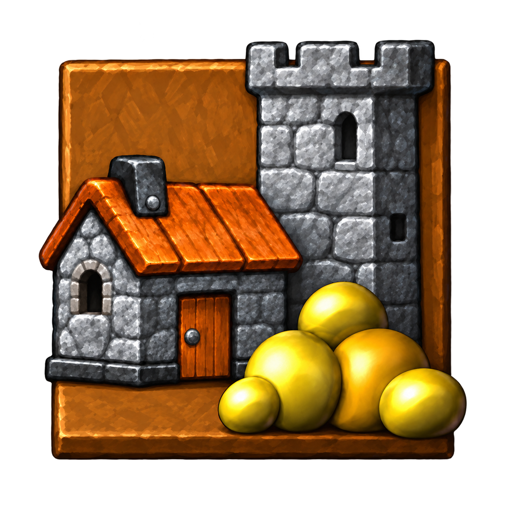
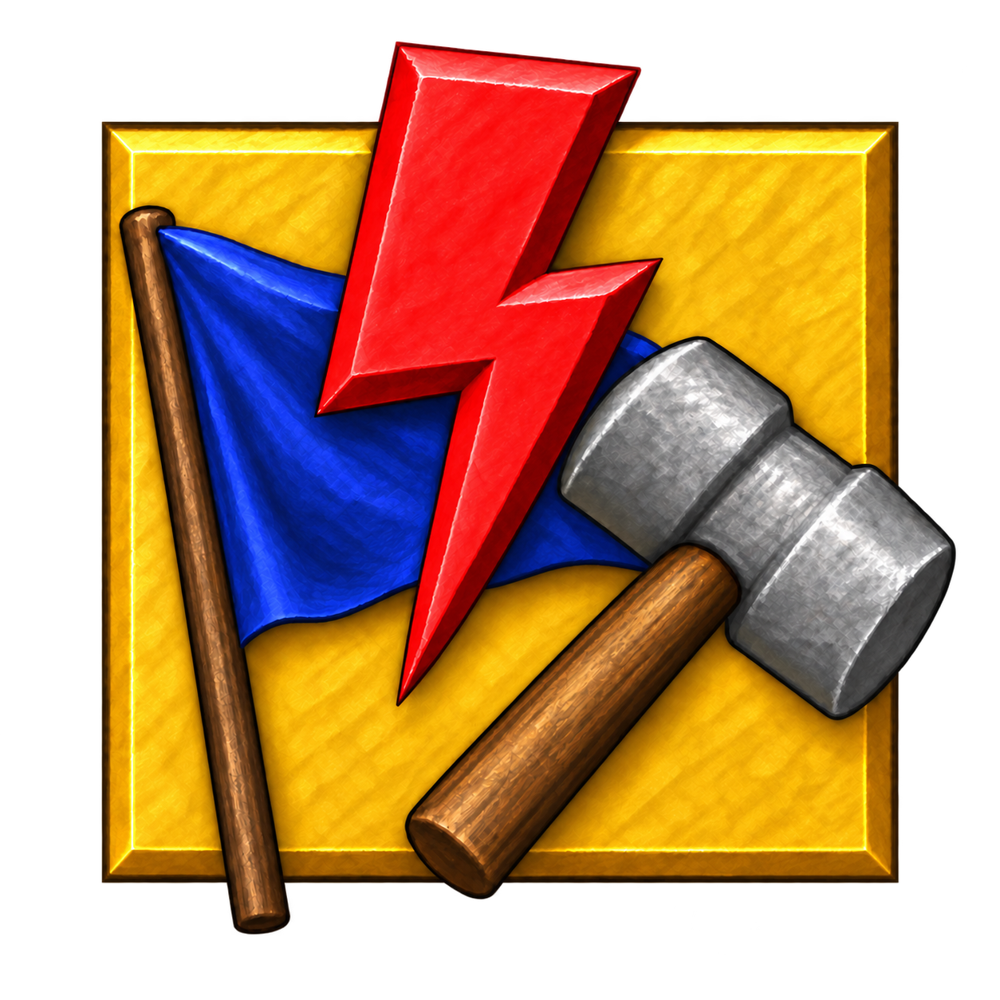
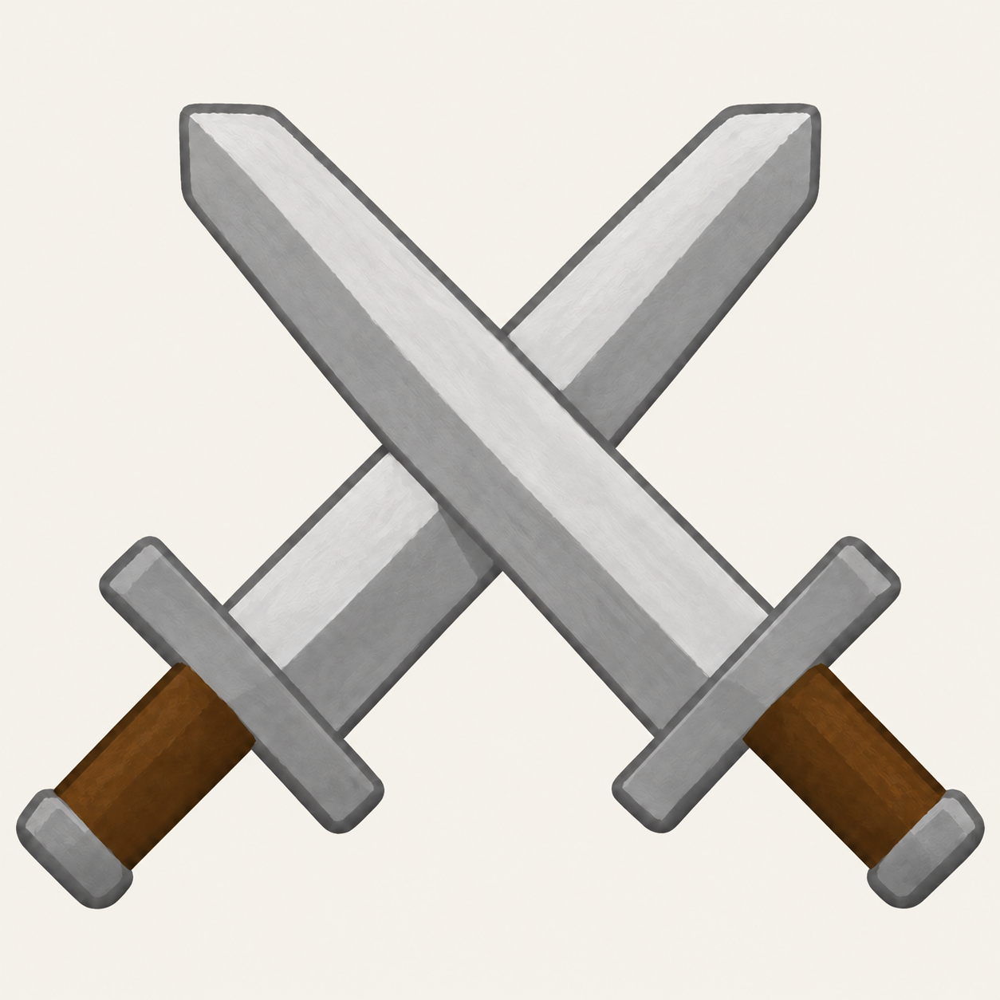
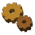
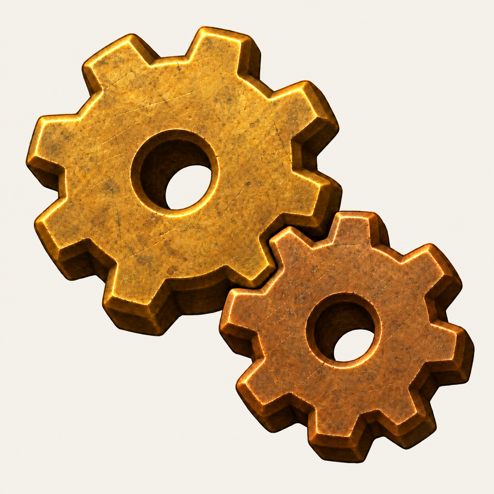
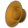

MENU-01
Menu.png · cell 0Save game
Approved in round 1Uses the already-approved UI-05 Save artwork.
All nine icons were approved and are integrated into the game. The Rules plaque has square outer corners and retains the approved blue flag, red lightning bolt, and gray hammer. The runtime sprites have transparent backgrounds and preserve the original menu layout. Music, FPS, and Audio also have matching high-resolution checked states.
Uses the already-approved UI-05 Save artwork.

Restored the brown backdrop and tall gray tower behind the stone building and gold.
Round 1 feedback: The background and the tower structure are missing from the high-res version View previous preview

Square gold plaque with a blue flag, red lightning bolt, and gray hammer.
Round 3 feedback: The HD version should NOT have chamfered edges, but the contents inside look correct now View previous preview

Crossed swords now have broad, flatter Clonk-style blades.
Round 1 feedback: Flatten the swords, make sure we're preserving the Clonk style View previous preview
Plain CRT monitor; paired with the FPS icon below.


The brass gear teeth now engage at their contact point.
Round 1 feedback: Gears aren't meshing View previous preview
Two connected golden notes.
The same CRT monitor as Display, with FPS on its screen.

A golden speaker cone informed by the game's StartupOptionIconsHD speaker.
Round 1 feedback: This is supposed to be a speaker, not an ear View previous preview
Other Options cells, Gamepad controller phases, Hand gestures, Rank symbols, and owner-colored Flag and Crew art are also candidates. They need their own review batches so paired states and owner colors remain consistent.